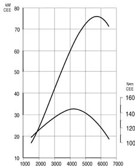
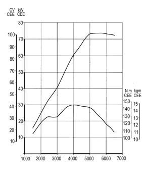
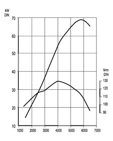
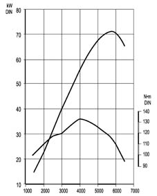
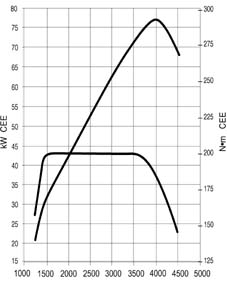
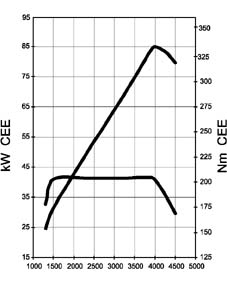

Requirements
- Path
- Technical Data > PROJECT DESCRIPTION AND SPECIFICATIONS > ENGINE TYPICAL CURVES > Requirements
- Kind
- technical data / specifications
- Applies to
- all engines; all production periods
- Interactive page
- https://sloeber94.github.io/elrnDB-fMltpl/en/#/2888544
Applies to: all engines; all production periods
The power and torque curves illustrated can be obtained with the engine overhauled and run in (50 hours' operation), without fan, with exhaust silencer and air cleaner, and at sea level.
1581 16V, BIPOWER (petrol operation)

1581 16V (Euro 3 versions), BIPOWER (petrol operation) - LPG (petrol operation and LPG operation0

BIPOWER (methane operation)

BLUPOWER

1910 JTD

1910 JTD MY 2003
